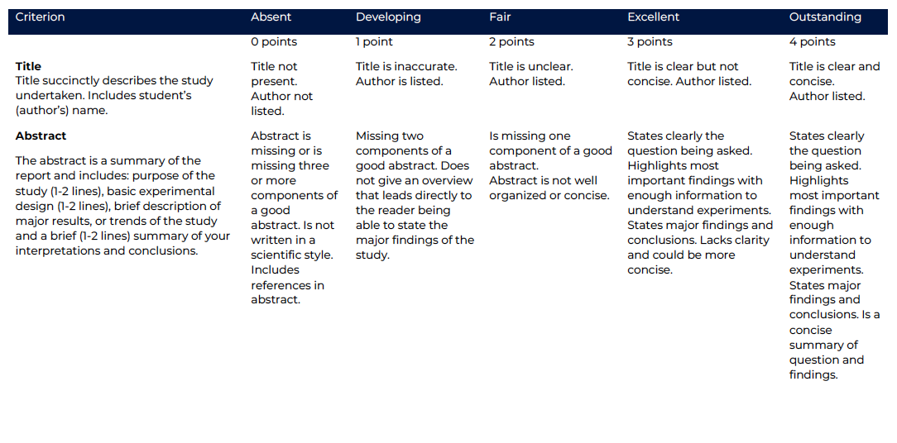

DP3:Peer Review
Peer Review Activity: Abstract Evaluation Using a Rubric
Below are four unlabeled scientific abstracts describing the same experiment: measuring citrate synthase activity in subcellular fractions of healthy and diseased cell lines.
Each abstract is written to align with one of the four rubric categories: Outstanding, Excellent, Fair, and Developing.
All abstracts are approximately six sentences long and presented in random order.
- Carefully read each abstract.
- Use the provided rubric to evaluate each one.
- Score them independently from 1 (Developing) to 4 (Outstanding).
- Write brief notes explaining the score for each abstract.
Rubric

Abstract 1
Citrate synthase activity was investigated in healthy and diseased mammalian cell lines by measuring enzymatic function in cytosolic and mitochondrial fractions. Cells were lysed and separated using differential centrifugation, and activity was measured using a spectrophotometric assay. The mitochondrial fractions consistently showed higher activity, confirming the expected localization. Diseased cells exhibited lower activity overall, especially in the mitochondrial fraction. These results suggest mitochondrial function is compromised in the diseased condition. The experiment provides insight into cellular metabolic changes associated with disease.
Abstract 2
We tested citrate synthase activity in different parts of the cell. Healthy and diseased cells were used in the study. We broke the cells up and spun them to get different parts, like mitochondria and cytosol. Then we measured enzyme activity with a color test. There were some differences between the samples. It looks like mitochondria might be involved in this, but it’s not totally clear from the results.
Abstract 3
The purpose of this experiment was to analyze the specific activity of citrate synthase in subcellular fractions of two mammalian cell lines. Healthy and diseased cells were lysed and processed to separate mitochondria and cytosol using centrifugation. Enzyme activity was measured using a colorimetric assay and normalized to total protein content. Mitochondrial fractions had greater activity, and diseased cells showed lower activity in both compartments. These findings support the hypothesis that mitochondrial dysfunction contributes to disease. Clear trends were observed, although further validation and controls would strengthen the results.
Abstract 4
In this experiment, we analyzed citrate synthase activity in different subcellular fractions of healthy and diseased cell lines. Cells were disrupted and fractionated via centrifugation into cytosolic and mitochondrial compartments. We quantified enzyme activity using a spectrophotometric method based on TNB production and calculated specific activity using protein concentration data. Results showed clear differences in activity between the two fractions, with mitochondrial activity being highest. Notably, diseased cells demonstrated significantly reduced activity in both fractions. These results strongly support a hypothesis of mitochondrial enzyme impairment in disease and reinforce the method’s effectiveness for subcellular analysis.
Abstract 5
This experiment aimed to investigate citrate synthase activity in cell fractions from healthy and diseased cells. Cells were prepared and divided into cytosolic and mitochondrial fractions using standard lab procedures. Enzyme activity was assessed with a colorimetric method, and we compared levels across the fractions and cell types. While mitochondrial activity appeared higher, details about the data or significance were limited. The abstract touches on all sections but lacks depth in interpreting results and establishing relevance.
Test your results
Use the following prompt with ChatGPT or another generative AI tool:
You are an expert in higher education assessment. Below are four student-written abstracts for a biochemistry lab. Each one is meant to represent one of four rubric categories: Outstanding, Excellent, Fair, and Developing. Please assign a category to each abstract and explain your reasoning based on writing clarity, scientific voice, structure, and detail. Here are the abstracts: [Insert Abstracts Here].
Challenging Abstract Evaluation
This abstract may appear advanced but contains flaws in communication.
Your task is to evaluate it using the rubric categories: Outstanding, Excellent, Fair, or Developing.
Abstract
Citrate synthase SA was quantified in MT and CYT subfractions isolated from immortalized mammalian CLs of divergent physiological states (i.e., HL and DL).
Fractionation was executed via DC and analyzed through TNB-based spectrophotometric methodologies.
Comparative SA metrics were demonstrated to be variably reduced across conditions, though significance thresholds were not consistently upheld.
Interpretation was limited by inconsistent normalization to TP content and variability in the enzymatic assay kinetics.
It is inferred that mitochondrial biogenesis or bioenergetic perturbation may be implicated, although further ELISA and qPCR corroboration would be recommended.
What rubric level best fits this abstract?
Use GenAI to Reflect and Revise
If your answer was incorrect or if you’re unsure why this abstract is difficult to evaluate, copy and paste the prompt below into ChatGPT or another GenAI tool:
You are an expert in scientific communication and higher education assessment.
I am learning how to identify weaknesses in scientific abstracts, especially those that sound complex but are not clear.
Below is an abstract I was given. Please review it and identify specific problems in clarity, structure, grammar, or scientific communication.
Then suggest how I could revise it to improve readability and better match an “Excellent” or “Outstanding” level according to a university rubric.
Abstract:
> Citrate synthase SA was quantified in MT and CYT subfractions isolated from immortalized mammalian CLs of divergent physiological states…